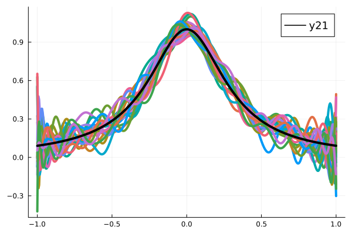
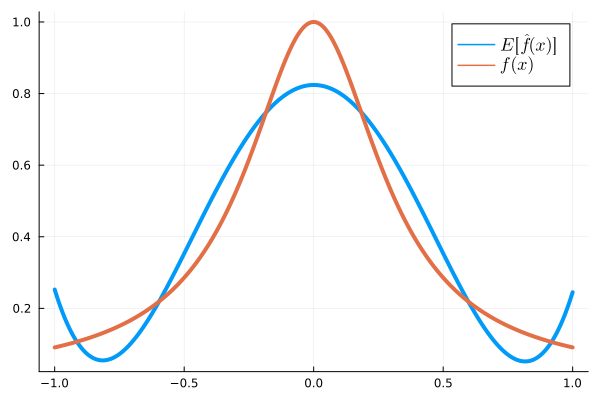
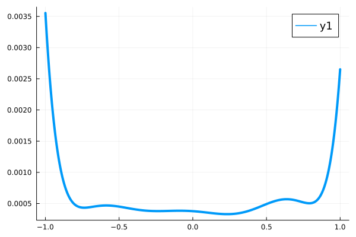

2025-10-22 Beyond Linear Models#
Last time#
Discussion
Bias-variance tradeoff
Linear models
Today#
Assumptions of linear models
Look at your data!
Partial derivatives
Loss functions
using LinearAlgebra
using Plots
default(linewidth=4, legendfontsize=12)
function vander(x, k=nothing)
if isnothing(k)
k = length(x)
end
m = length(x)
V = ones(m, k)
for j in 2:k
V[:, j] = V[:, j-1] .* x
end
V
end
function vander_chebyshev(x, n=nothing)
if isnothing(n)
n = length(x) # Square by default
end
m = length(x)
T = ones(m, n)
if n > 1
T[:, 2] = x
end
for k in 3:n
#T[:, k] = x .* T[:, k-1]
T[:, k] = 2 * x .* T[:,k-1] - T[:, k-2]
end
T
end
function chebyshev_regress_eval(x, xx, n)
V = vander_chebyshev(x, n)
vander_chebyshev(xx, n) / V
end
runge(x) = 1 / (1 + 10*x^2)
runge_noisy(x, sigma) = runge.(x) + randn(size(x)) * sigma
CosRange(a, b, n) = (a + b)/2 .+ (b - a)/2 * cos.(LinRange(-pi, 0, n))
vcond(mat, points, nmax) = [cond(mat(points(-1, 1, n))) for n in 2:nmax]
vcond (generic function with 1 method)
Bias-variance tradeoff#
The expected error in our approximation \(\hat f(x)\) of noisy data \(y = f(x) + \epsilon\) (with \(\epsilon \sim \mathcal N(0, \sigma)\)), can be decomposed as
Stacking many realizations#
degree = 30
x = LinRange(-1, 1, 500)
Y = []
for i in 1:20
yi = runge_noisy(x, 0.3)
push!(Y, chebyshev_regress_eval(x, x, degree) * yi)
end
Y = hcat(Y...)
@show size(Y) # (number of points in each fit, number of fits)
plot(x, Y, label=nothing);
plot!(x, runge.(x), color=:black)
size(Y) = (500, 20)

Interpretation#
Re-run the cell above for different values of
degree. (Set it back to a number around 7 to 10 before moving on.)Low-degree polynomials are not rich enough to capture the peak of the function.
As we increase degree, we are able to resolve the peak better, but see more eratic behavior near the ends of the interval. This erratic behavior is overfitting, which we’ll quantify as variance.
This tradeoff is fundamental: richer function spaces are more capable of approximating the functions we want, but they are more easily distracted by noise.
Mean and variance over the realizations#
Ymean = sum(Y, dims=2) / size(Y, 2)
plot(x, Ymean, label="\$ E[\\hat{f}(x)] \$")
plot!(x, runge.(x), label="\$ f(x) \$")

function variance(Y)
"""Compute the Variance as defined at the top of this activity"""
n = size(Y, 2)
sum(Y.^2, dims=2)/n - (sum(Y, dims=2) / n) .^2
end
Yvar = variance(Y)
@show size(Yvar)
plot(x, Yvar)
size(Yvar) = (500, 1)

Why do we call it a linear model?#
We are currently working with algorithms that express the regression as a linear function of the model parameters. That is, we search for coefficients \(c = [c_1, c_2, \dotsc]^T\) such that
where the left hand side is linear in \(c\). In different notation, we are searching for a predictive model
that is linear in \(c\).
Standard assumptions for regression#
(the way we’ve been doing it so far)#
The independent variables \(x\) are error-free
The prediction (or “response”) \(f(x,c)\) is linear in \(c\)
The noise in the measurements \(y\) is independent (uncorrelated)
The noise in the measurements \(y\) has constant variance
There are reasons why all of these assumptions may be undesirable in practice, thus leading to more complicated methods.
Anscombe’s quartet#

Loss functions#
The error in a single prediction \(f(x_i,c)\) of an observation \((x_i, y_i)\) is often measured as
where I’ve used the notation \(f(x,c)\) to mean the vector resulting from gathering all of the outputs \(f(x_i, c)\). The function \(L\) is called the “loss function” and is the key to relaxing the above assumptions.
Gradient of scalar-valued function#
Let’s step back from optimization and consider how to differentiate a function of several variables. Let \(f(\boldsymbol x)\) be a function of a vector \(\boldsymbol x\). For example,
We can evaluate the partial derivative by differentiating with respect to each component \(x_i\) separately (holding the others constant), and collect the result in a vector,
Gradient of vector-valued functions#
Now let’s consider a vector-valued function \(\boldsymbol f(\boldsymbol x)\), e.g.,
and write the derivative as a matrix,
Geometry of partial derivatives#

Handy resource on partial derivatives for matrices and vectors: https://explained.ai/matrix-calculus/index.html#sec3
Derivative of a dot product#
Let \(f(\boldsymbol x) = \boldsymbol y^T \boldsymbol x = \sum_i y_i x_i\) and compute the derivative
Note that \(\boldsymbol y^T \boldsymbol x = \boldsymbol x^T \boldsymbol y\) and we have the product rule,
Also,
Variational notation#
It’s convenient to express derivatives in terms of how they act on an infinitessimal perturbation. So we might write
(It’s common to use \(\delta x\) or \(dx\) for these infinitesimals.) This makes inner products look like a normal product rule
A powerful example of variational notation is differentiating a matrix inverse
and thus
Practice#
Differentiate \(f(x) = A x\) with respect to \(x\)
Differentiate \(f(A) = A x\) with respect to \(A\)
Optimization#
Given data \((x,y)\) and loss function \(L(c; x,y)\), we wish to find the coefficients \(c\) that minimize the loss, thus yielding the “best predictor” (in a sense that can be made statistically precise). I.e.,
It is usually desirable to design models such that the loss function is differentiable with respect to the coefficients \(c\), because this allows the use of more efficient optimization methods. Recall that our forward model is given in terms of the Vandermonde matrix,
and thus
Derivative of loss function#
We can now differentiate our loss function
where \(V(x_i)\) is the \(i\)th row of \(V(x)\).
Alternative derivative#
Alternatively, we can take a more linear algebraic approach to write the same expression is
A necessary condition for the loss function to be minimized is that \(\nabla_c L(c; x,y) = 0\).
Is the condition sufficient for general \(f(x, c)\)?
Is the condition sufficient for the linear model \(f(x,c) = V(x) c\)?
Have we seen this sort of equation before?